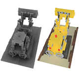
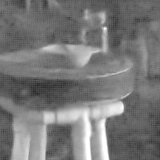
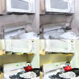

Your browser does not support the video tag.
Mip-NeRF: A Multiscale Representation for Anti-Aliasing Neural Radiance Fields
Jonathan T. Barron ,
Ben Mildenhall ,
Matthew Tancik , Peter Hedman ,
Ricardo Martin-Brualla ,
Pratul Srinivasan
ICCV , 2021 (Oral Presentation) project page
/
arXiv
/
video
/
code
NeRF is aliased, but we can anti-alias it by casting cones and prefiltering the positional encoding function.
Your browser does not support the video tag.
Baking Neural Radiance Fields for Real-Time View Synthesis
Peter Hedman ,
Pratul Srinivasan ,
Ben Mildenhall ,
Jonathan T. Barron ,
Paul Debevec
ICCV , 2021 (Oral Presentation) project page
/
arXiv
/
video
/
demo
Baking a trained NeRF into a sparse voxel grid of colors and features lets you render it in real-time in your browser.
Your browser does not support the video tag.
Nerfies: Deformable Neural Radiance Fields
Keunhong Park ,
Utkarsh Sinha ,
Jonathan T. Barron ,
Sofien Bouaziz , Dan B Goldman ,
Steven M. Seitz ,
Ricardo-Martin Brualla
ICCV , 2021 (Oral Presentation) project page /
arXiv /
video
Building deformation fields into NeRF lets you capture non-rigid subjects, like people.
Cross-Camera Convolutional Color Constancy
Mahmoud Afifi ,
Jonathan T. Barron ,
Chloe LeGendre ,
Yun-Ta Tsai ,
Francois Bleibel
ICCV , 2021 (Oral Presentation)
With some extra (unlabeled) test-set images, you can build a hypernetwork that calibrates itself at test time to previously-unseen cameras.
Your browser does not support the video tag.
NeRD: Neural Reflectance Decomposition from Image Collections
Mark Boss ,
Raphael Braun ,
Varun Jampani ,
Jonathan T. Barron ,
Ce Liu ,
Hendrik P. A. Lensch
ICCV , 2021
project page /
video /
code /
arXiv
A NeRF-like model that can decompose (and mesh) objects with non-Lambertian reflectances, complex geometry, and unknown illumination.
How to Train Neural Networks for Flare Removal
Yicheng Wu ,
Qiurui He ,
Tianfan Xue ,
Rahul Garg , Jiawen Chen ,
Ashok Veeraraghavan ,
Jonathan T. Barron
ICCV , 2021
project page /
arXiv
Simulating the optics of a camera's lens lets you train a model that removes lens flare from a single image.
Your browser does not support the video tag.
iNeRF: Inverting Neural Radiance Fields for Pose Estimation
Lin Yen-Chen ,
Pete Florence ,
Jonathan T. Barron , Alberto Rodriguez ,
Phillip Isola ,
Tsung-Yi Lin
IROS , 2021
project page /
arXiv /
video
Given an image of an object and a NeRF of that object, you can estimate that object's pose.
Your browser does not support the video tag.
HyperNeRF: A Higher-Dimensional Representation
for Topologically Varying Neural Radiance Fields
Keunhong Park ,
Utkarsh Sinha ,
Peter Hedman ,
Jonathan T. Barron ,
Sofien Bouaziz , Dan B Goldman ,
Ricardo Martin-Brualla ,
Steven M. Seitz
arXiv , 2021
project page
/
arXiv
Applying ideas from level set methods to NeRF lets you represent scenes that deform and change shape.

NeRFactor: Neural Factorization of Shape and Reflectance
Xiuming Zhang ,
Pratul Srinivasan ,
Boyang Deng ,Paul Debevec ,
William T. Freeman ,
Jonathan T. Barron ,
arXiv , 2021
project page
/
arXiv
/
video
By placing priors on illumination and materials, we can recover NeRF-like models of the intrinsics of a scene from a single multi-image capture.
Your browser does not support the video tag.
IBRNet: Learning Multi-View Image-Based Rendering
Qianqian Wang ,
Zhicheng Wang ,
Kyle Genova ,
Pratul Srinivasan ,
Howard Zhou , Jonathan T. Barron ,
Ricardo Martin-Brualla ,
Noah Snavely ,
Thomas Funkhouser
CVPR , 2021
project page /
code /
arXiv
By learning how to pay attention to input images at render time,
we can amortize inference for view synthesis and reduce error rates by 15%.
Your browser does not support the video tag.
NeRV: Neural Reflection and Visibility Fields for Relighting and View Synthesis
Pratul Srinivasan ,
Boyang Deng ,
Xiuming Zhang , Matthew Tancik ,
Ben Mildenhall ,
Jonathan T. Barron
CVPR , 2021
project page /
video /
arXiv
Using neural approximations of expensive visibility integrals lets you recover relightable NeRF-like models.
Your browser does not support the video tag.
Learned Initializations for Optimizing Coordinate-Based Neural Representations
Matthew Tancik* ,
Ben Mildenhall* ,
Terrance Wang ,
Divi Schmidt , Pratul Srinivasan ,
Jonathan T. Barron ,
Ren Ng
CVPR , 2021 (Oral Presentation) project page /
video /
arXiv
Using meta-learning to find weight initializations for coordinate-based MLPs allows them to converge faster and generalize better.
Your browser does not support the video tag.
NeRF in the Wild: Neural Radiance Fields for Unconstrained Photo Collections
Ricardo Martin-Brualla* ,
Noha Radwan* ,
Mehdi S. M. Sajjadi* , Jonathan T. Barron ,
Alexey Dosovitskiy ,
Daniel Duckworth
CVPR , 2021 (Oral Presentation) project page /
arXiv /
video
Letting NeRF reason about occluders and appearance variation produces photorealistic view synthesis using only unstructured internet photos.
Learned Dual-View Reflection Removal
Simon Niklaus ,
Xuaner (Cecilia) Zhang ,
Jonathan T. Barron ,
Neal Wadhwa ,
Rahul Garg ,
Feng Liu ,
Tianfan Xue ,
WACV , 2021
project page /
arXiv
Reflections and the things behind them often exhibit parallax, and this lets you remove reflections from stereo pairs.
Your browser does not support the video tag.
Neural Light Transport for Relighting and View Synthesis
Xiuming Zhang ,
Sean Fanello ,
Yun-Ta Tsai ,
Tiancheng Sun ,
Tianfan Xue ,
Rohit Pandey ,
Sergio Orts-Escolano ,
Philip Davidson ,
Christoph Rhemann ,
Paul Debevec ,
Jonathan T. Barron ,
Ravi Ramamoorthi ,
William T. Freeman
ACM TOG , 2021
project page /
arXiv /
video
Embedding a convnet within a predefined texture atlas enables simultaneous view synthesis and relighting.

Burst Denoising with Kernel Prediction Networks
Ben Mildenhall ,
Jonathan T. Barron ,
Jiawen Chen ,
Dillon Sharlet ,
Ren Ng , Robert Carroll
CVPR , 2018 (Spotlight) supplement /
code /
bibtex
We train a network to predict linear kernels that denoise noisy bursts from cellphone cameras.
Fast Fourier Color Constancy
Jonathan T. Barron ,
Yun-Ta Tsai ,
CVPR , 2017
video /
bibtex /
code /
output /
blog post /
p r e s s
Color space can be aliased, allowing white balance models to be learned and evaluated in the frequency domain. This improves accuracy by 13-20% and speed by 250-3000x.
This technology is used by Google Pixel , Google Photos , and Google Maps .
Jump: Virtual Reality Video
Robert Anderson , David Gallup , Jonathan T. Barron , Janne Kontkanen , Noah Snavely , Carlos Hernández , Sameer Agarwal , Steven M Seitz
SIGGRAPH Asia , 2016
supplement /
video /
bibtex /
blog post
Using computer vision and a ring of cameras, we can make video for virtual reality headsets that is both stereo and 360°.
This technology is used by Jump .
Burst Photography for High Dynamic Range and Low-Light Imaging on Mobile Cameras
Samuel W. Hasinoff , Dillon Sharlet , Ryan Geiss , Andrew Adams , Jonathan T. Barron , Florian Kainz, Jiawen Chen , Marc Levoy
SIGGRAPH Asia , 2016
project page /
supplement /
bibtex
Mobile phones can take beautiful photographs in low-light or high dynamic range environments by aligning and merging a burst of images.
This technology is used by the Nexus HDR+ feature.
The Fast Bilateral Solver
Jonathan T. Barron ,
Ben Poole
ECCV , 2016 (Oral Presentation, Best Paper Honorable Mention) arXiv /
supplement /
bibtex /
video (they messed up my slides, use →) /
keynote (or PDF ) /
code /
depth super-res results /
reviews
Our solver smooths things better than other filters and faster than other optimization algorithms, and you can backprop through it.
Geometric Calibration for Mobile, Stereo, Autofocus Cameras
Stephen DiVerdi ,
Jonathan T. Barron
WACV , 2016
bibtex
Standard techniques for stereo calibration don't work for cheap mobile cameras.
Semantic Image Segmentation with Task-Specific Edge Detection Using CNNs and a Discriminatively Trained Domain Transform
CVPR , 2016
Liang-Chieh Chen , Jonathan T. Barron , George Papandreou , Kevin Murphy , Alan L. Yuille
bibtex /
project page /
code
By integrating an edge-aware filter into a convolutional neural network we can learn an edge-detector while improving semantic segmentation.
Convolutional Color Constancy
Jonathan T. Barron
ICCV , 2015
supplement / bibtex / video (or mp4 )
By framing white balance as a chroma localization task we can discriminatively learn a color constancy model that beats the state-of-the-art by 40%.

Scene Intrinsics and Depth from a Single Image
Evan Shelhamer , Jonathan T. Barron , Trevor Darrell
ICCV Workshop , 2015
bibtex
The monocular depth estimates produced by fully convolutional networks can be used to inform intrinsic image estimation.
Fast Bilateral-Space Stereo for Synthetic Defocus
Jonathan T. Barron , Andrew Adams , YiChang Shih , Carlos Hernández
CVPR , 2015 (Oral Presentation) abstract /
supplement /
bibtex /
talk /
keynote (or PDF )
By embedding a stereo optimization problem in "bilateral-space" we can very quickly solve for an edge-aware depth map, letting us render beautiful depth-of-field effects.
This technology is used by the Google Camera "Lens Blur" feature.
Multiscale Combinatorial Grouping for Image Segmentation and Object Proposal Generation
Jordi Pont-Tuset , Pablo Arbeláez , Jonathan T. Barron , Ferran Marqués , Jitendra Malik
TPAMI , 2017
project page /
bibtex /
fast eigenvector code
We produce state-of-the-art contours, regions and object candidates, and we compute normalized-cuts eigenvectors 20× faster.
This paper subsumes our CVPR 2014 paper.
Shape, Illumination, and Reflectance from Shading
Jonathan T. Barron , Jitendra Malik
TPAMI , 2015
bibtex / keynote (or powerpoint , PDF ) / video / code & data / kudos
We present SIRFS , which can estimate shape, chromatic illumination, reflectance, and shading from a single image of an masked object.
This paper subsumes our CVPR 2011, CVPR 2012, and ECCV 2012 papers.
Multiscale Combinatorial Grouping
Pablo Arbeláez , Jordi Pont-Tuset , Jonathan T. Barron , Ferran Marqués , Jitendra Malik
CVPR , 2014
project page /
bibtex
This paper is subsumed by our journal paper .
Volumetric Semantic Segmentation using Pyramid Context Features
Jonathan T. Barron , Pablo Arbeláez , Soile V. E. Keränen , Mark D. Biggin ,
David W. Knowles , Jitendra Malik
ICCV , 2013
supplement /
poster /
bibtex / video 1 (or mp4 ) / video 2 (or mp4 ) / code & data
We present a technique for efficient per-voxel linear classification, which enables accurate and fast semantic segmentation of volumetric Drosophila imagery.
3D Self-Portraits
Hao Li , Etienne Vouga , Anton Gudym, Linjie Luo , Jonathan T. Barron , Gleb Gusev
SIGGRAPH Asia , 2013
video / shapify.me / bibtex
Our system allows users to create textured 3D models of themselves in arbitrary poses using only a single 3D sensor.
Intrinsic Scene Properties from a Single RGB-D Image
Jonathan T. Barron , Jitendra Malik
CVPR , 2013 (Oral Presentation) supplement / bibtex / talk / keynote (or powerpoint , PDF ) / code & data
By embedding mixtures of shapes & lights into a soft segmentation of an image, and by leveraging the output of the Kinect, we can extend SIRFS to scenes.
version / bibtex
Boundary Cues for 3D Object Shape Recovery
Kevin Karsch ,
Zicheng Liao ,
Jason Rock ,
Jonathan T. Barron ,
Derek Hoiem
CVPR , 2013
supplement / bibtex
Boundary cues (like occlusions and folds) can be used for shape reconstruction, which improves object recognition for humans and computers.
Color Constancy, Intrinsic Images, and Shape Estimation
Jonathan T. Barron , Jitendra Malik
ECCV , 2012
supplement /
bibtex /
poster /
video
This paper is subsumed by SIRFS .
Shape, Albedo, and Illumination from a Single Image of an Unknown Object
Jonathan T. Barron , Jitendra Malik
CVPR , 2012
supplement /
bibtex /
poster
This paper is subsumed by SIRFS .
A Category-Level 3-D Object Dataset: Putting the Kinect to Work
Allison Janoch ,
Sergey Karayev ,
Yangqing Jia ,
Jonathan T. Barron ,
Mario Fritz ,
Kate Saenko ,
Trevor Darrell
ICCV 3DRR Workshop , 2011
bibtex /
"smoothing" code
We present a large RGB-D dataset of indoor scenes and investigate ways to improve object detection using depth information.
High-Frequency Shape and Albedo from Shading using Natural Image Statistics
Jonathan T. Barron , Jitendra Malik
CVPR , 2011
bibtex
This paper is subsumed by SIRFS .
Discovering Efficiency in Coarse-To-Fine Texture Classification
Jonathan T. Barron , Jitendra Malik
Technical Report , 2010
bibtex
A model and feature representation that allows for sub-linear coarse-to-fine semantic segmentation.
Parallelizing Reinforcement Learning
Jonathan T. Barron , Dave Golland , Nicholas J. Hay
Technical Report , 2009
bibtex
Markov Decision Problems which lie in a low-dimensional latent space can be decomposed, allowing modified RL algorithms to run orders of magnitude faster in parallel.
Blind Date: Using Proper Motions to Determine the Ages of Historical Images
Jonathan T. Barron , David W. Hogg , Dustin Lang , Sam Roweis
The Astronomical Journal , 136, 2008
Using the relative motions of stars we can accurately estimate the date of origin of historical astronomical images.
Cleaning the USNO-B Catalog Through Automatic Detection of Optical Artifacts
Jonathan T. Barron , Christopher Stumm , David W. Hogg , Dustin Lang , Sam Roweis
The Astronomical Journal , 135, 2008
We use computer vision techniques to identify and remove diffraction spikes and reflection halos in the USNO-B Catalog.
In use at Astrometry.net


{kind=link}